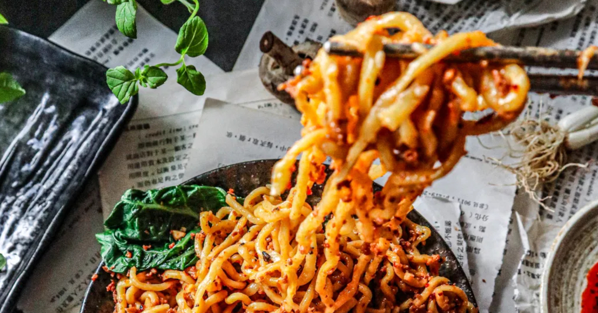

D A N DAN M I A N
Spicy Rice Noodles with Beef
Home

i n g r e d i e n t s
the stir-fry:
- 1 Tbsp of Chopped
Garlic
- 1 Tbsp of Chopped
Ginger
- 1 Tbsp Soy Sauce
- A Pinch of Black
Pepper
- 1 Tbsp of Cooking
Oil
- Chinese Preserved
Mustard Greens
the sauce:
- 1 Tsp of Chopped
Garlic
- 2 Tbsp of Tahini
- 1 1/2 Tbsp Soy Sauce
- 1 Tsp of Dark Soy
Sauce
- 3 Tbsp of Chilli Oil
(with
Chilli Flakes)
- 1-3 Tsp Toasted Sichuan
Peppercorns
- 1/2 Tbsp of Sugar
- 2 Portions of Rice Noodles
- Handful of Chopped Spring
Onions
- Handful of your choice of
Leafy Veg
- Crushed Peanuts or
Sesame Seeds
m e t h o d
- First, mix the beef, garlic, ginger, soy sauce, and black
pepper in a bowl.
- In a separate bowl, combine the tahini, flaked chilli oil,
both soy sauces,
peppercorns, and sugar together.
- Now, heat a wok or pan over high heat and add 1 tbsp of
cooking oil.
- Into this wok, add the marinated beef mixture and stir-fry
until cooked.
- Add some of the preserved greens into the stir-fry.
- Remove this from the heat, and in another pot cook some
noodles.
- When the noodles are almost ready, add your leady vef of
choice to the
water and blanch.
- Drain the noodles and get ready to plate up.
- In a separate bowl, place half the sauce at the bottom and
top off with
noodles.
- Arrange the bowl how you want to and garnish as you like.
- Enjoy!
Here is the recipe that inspired this:
Home